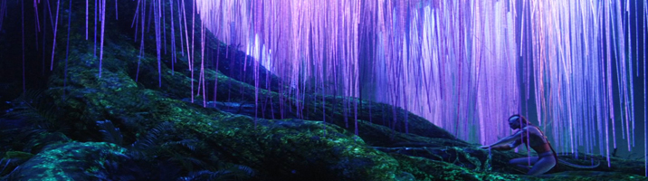

INFORMATION
This section will give you a brief understanding of what kind of atmosphere and experience you can feel during your trip. Underneath you can see a small guide which contains comprehensive information about indigenous Na'Vi people, beautiful and colourful nature, battle of clans and the culture of Na'Vi people.

Clans
Na'Vi
The Na'vi (known as people for us) are a race of sentient extraterrestrial humanoids who inhabit the lush jungle moon of Pandora. Humans refer them as "blues" or "the natives". The indigenous Na'vi are approximately 3 meters tall, with smooth, striped cyan-colored skin, large yellow eyes, and long, sweeping tails. Their bodies are more slender than humans. The Na'vi are an omnivorous species. They eat meat as demonstrated by their hunting practices and pronounced canines but have also been seen to forage, demonstrating their consumption of plants and other produce. Their society includes hunters and gatherers with incipient agriculture. Little apparel is worn by the Na'vi. Cloth, most likely woven from native flora of the planet is the basic garment worn by all Na'vi. It is possible that very little clothing is worn by the Na'vi because it is simply what is needed for the Na'vi to work and live taking minimally from the environment. Clothes appear to also show the ranking of one in the hierarchy of a clan. There are about 1000 words in the Na'vi language, some of which were created by the simple concept of compounding, which is simply joining the words together to create a definition of a noun. This is a common concept in American aboriginal languages and is likely why it was adapted for Na'vi.
Nature
Hallelujah Mountains
The Hallelujah Mountains menas the "Floating Mountains". Hallelujah Mountains are floating islands that circulate slowly in the magnetic currents like icebergs at sea, scraping against each other and the towering mesa-like mountains of the region. They are overgrown with foliage at the top and straggly beards of vines hang down beneath the mountains like the roots of air-ferns. Their sides are sheer cliffs. Waterfalls, originating on the mesa-like tops, stream down the sides and disperse into spray at the bottoms, like upside-down geysers. The mist then condenses on other floating mountains and flows over the side and disperses, renewing the process.
Warbonnet Fern
The warbonnet fern is a large, herbaceous, fern-like plant with colorful, iridescent blue leaves. It is widely found on Pandora. The most striking feature of the warbonnet fern is the iridescent blue of the leaves, which contain abundant anthocyanin pigments. These pigments are light-reactive chemicals that reflect blue light and give color to the blue and purple flowers and fruit. The warbonnet fern was aptly named for the primary use of this plant--as headwear during times of both war and peace. Birds feed on insects and protect plant from insect feeding. The warbonnet fern has evolved a close relationship with a particular species of forest bird, which is also a pale iridescent blue color and well camouflaged against the leaves of the plant. These birds feed on insects that are attracted to the blue leaves that have red lines radiating out from the center of the plant.
Bioluminescence
Bioluminescence is the way that living organisms emit light. It is employed by nearly all Pandoran animals. Even the Na'vi have patterns of glowing dots that are unique to each individual. To avoid being detected by predators or prey, animals can damp down their own light. Most of Pandora's flora and fauna emit only one single color, often green, blue, indigo, or violet. There are exceptions, like the warbonnet fern. Its leaves are illuminated by a broad band of red near their stems and by an iridescent blue near their tips. On Pandora, there is also a bioluminescent moss that is touch-sensitive. It will send out rings of blue-green light as a reaction to footsteps. Bioluminescence is an enzymatic reaction that produces so called cold light. This reaction raises the valence electrons in the molecules of an organic compound to an orbit of higher energy. While decaying to its original state the electrons emit photons of visible light. It is a highly efficient reaction as it converts nearly all energy into light.
Clans
The Na'vi have no far-reaching political structure on the scale of nation-states, but are organized into relatively complex clans, of which there are hundreds. Occasionally, different clans from distant areas will cooperate in times of a great crisis. At the very least the clans must undergo some form of trade. Pandora is largely a jungle world and many Na'vi tribes are very similar to each other, but each clan is very strong on particular point.
The Omatikaya
Habitat: Jungle
Specialty : Textiles and weaving
Analysis : Even among the highly attuned Na’vi, the Omatikaya are extremely spiritual. They are known to reside in gigantic Hometrees over generations, and for celebrating their direct, personal connection to Eywa. They also celebrate their connection to each other; as Eywa represents the connectedness of all things, the Omatikaya place great stress on the bonds they share with their fellow clanspeople, prizing hospitality and a good meal above other, more warlike traits.
The Olangi
Habitat: Plains
Specialty : Direhorse affinity
Analysis : ast plains cover much of Pandora’s land mass, and it is here that you will find direhorse clans like the Olangi. The clan is nomadic, following game on its seasonal migratory patterns across the plains and often sleeping under the stars. They claim this freedom of movement as both a birthright and a privilege, affording them as it does the chance to “see” so much of their world (in the Eywa-related sense).
The Tawkami
Habitat: Jungle
Specialty : Botanical alchemy
We at the PRF have a special place in our hearts for the Tawkami, because they are the field botanists of the Na’vi. They have a deep desire to know the natural world (as it is the manifestation of Eywa), and a correspondingly deep knowledge of their jungle habitat — especially plant life. Using every part of the plant, from flower to root to essential oils, they can make potions for healing wounds, curing illness, directing the behavior of animals, and facilitating spiritual guidance.
Culture & Spirituals
The Tree of Souls is a willow-like tree with long, bioluminescent tendrils and a large, semi-exposed root system. It grows in a caldera within a valley of stone arches, not far from the site of the old Omatikaya Hometree. Arches, of course, indicate unobtanium-rich sites of magnetic field activity, and the region containing the Tree is one of the busiest on the moon. Known as the “flux vortex,” the atmospheric conditions are so unstable that pilots have to operate by sight rather than trust their instruments. The Na’vi claim that any instability is a result of the Eywa’s energetic regard for her Tree. For it is a site where Eywa forges one of the most direct spiritual connections with her People, using the Tree as a conduit.
Together Before Eywa
We observed the Na’vi make multiple addresses to Eywa at the foot of the Tree. The entire clan would gather and, led by their Tsahik (the clan spiritualist and medicine woman), make various exclamations — sometimes expressing routine thanks, as in a Sunday mass, sometimes making specific requests for guidance, and sometimes performing a healing rite. The clanspeople would sit arm-in-arm, queued to the exposed roots of the Tree; in this way, every Na’vi child, female and male can experience simultaneous connection to each other — a condition of profound emotional power for them and one that the human brain is barely able to comprehend.
Atokirina
Local communication with Eywa is not limited to physical contact with the Tree alone. Like any tree, this one sends out seeds, and the Na’vi believe that each seed — called atokirina (or “woodsprite”) — contains a spirit in pure communion with Eywa Atokirina can often be seen drifting, jellyfish-like, through the forest, and the Na’vi interpret their various behaviors — how they drift, where they settle, and whether they cluster or remain solitary — as omens..